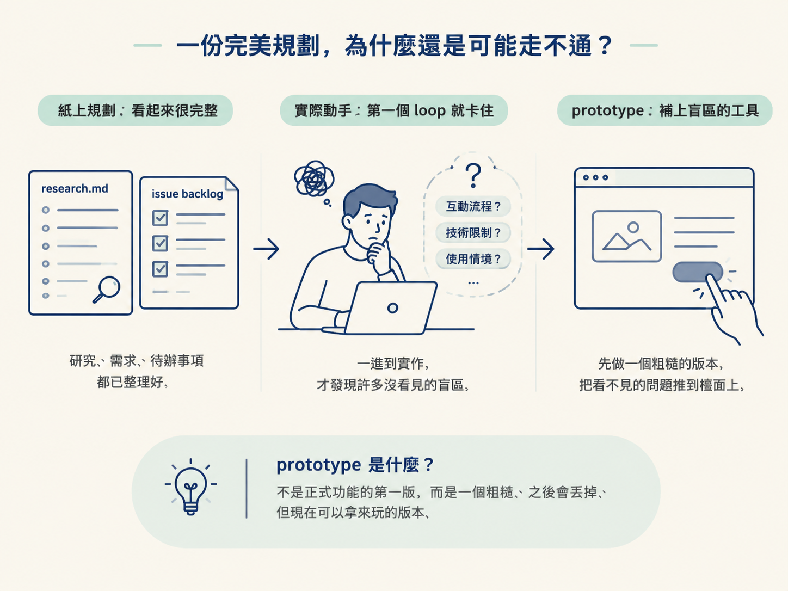
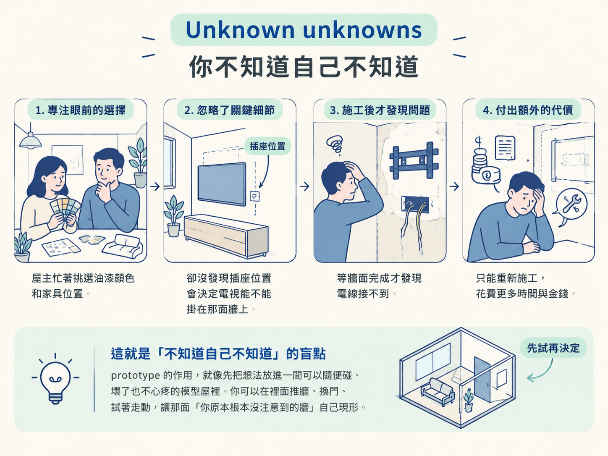
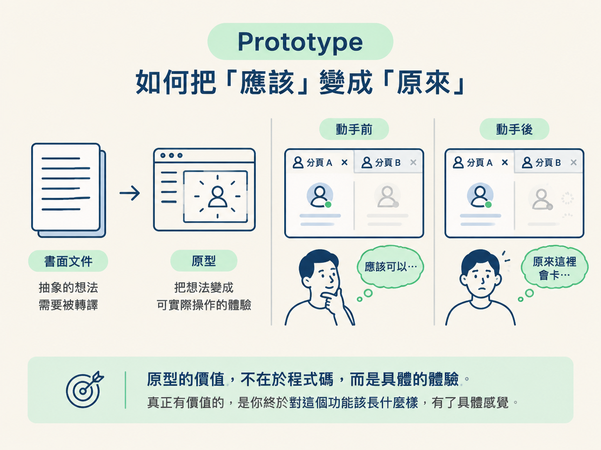
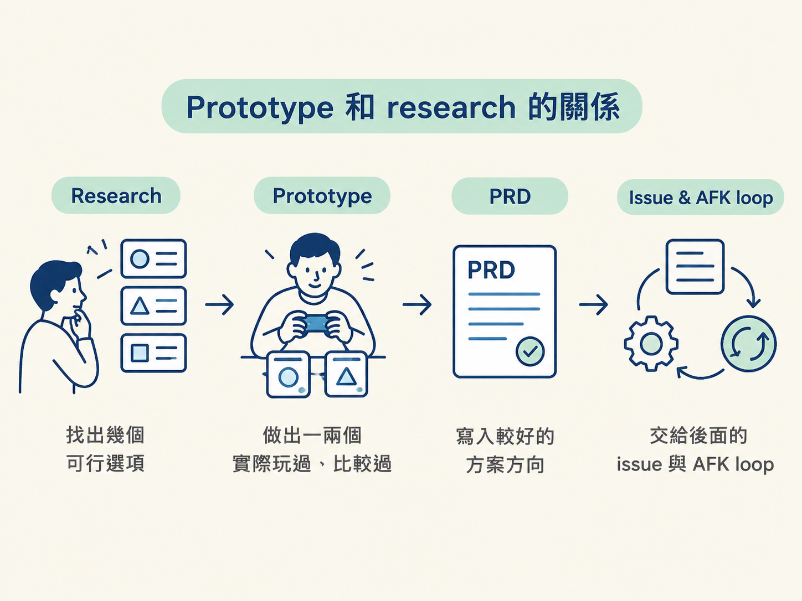

你做完 research，手上的 research.md 看起來幾乎挑不出毛病：需求列清楚了，四個服務比較過了，也寫好了推薦方案與串接方式。接著，你把工作拆成 issue，丟進 backlog，讓 agent 自己往下跑。
結果第一個實作 loop 就卡住。卡住的原因不是程式寫不出來，而是你突然發現：「這樣接，感覺不對。」
問題不一定出在研究做得不好，而是文字規劃天生有一層看不見的盲區。這一節要介紹的 prototype，就是用來補上這層盲區的工具。它不是正式功能的第一版，而是一個粗糙、之後會丟掉、但現在可以拿來玩的版本，先把只靠閱讀看不出來的問題逼到檯面上。

讀完這一節，你應該能說明三件事：
你和 agent 對話、在 plan mode 裡寫規劃，其實就是在腦中先跑一遍未來。這種做法很有效率，但有一個限制：只要某個環節被你用「應該可以」帶過，那個環節就還沒有真的驗證。
文件不會反駁你，agent 也不會。它們通常只會根據你寫下的內容繼續往前走。
等事情進到真實世界，這些「應該」就可能一個接一個破掉。第三方服務的授權流程，可能和你想的不一樣；資料模型遇到「使用者中途關掉分頁」時，可能留下誰也沒預期的狀態。
這些問題不是單純多想幾分鐘就能解決的，因為在一開始，你甚至不知道自己該往哪個方向想。
這類問題有一個名字：unknown unknowns，中文常翻成「未知的未知」。它和一般的未知不太一樣。
一般的未知叫作 known unknowns，也就是「你知道自己不知道什麼」。例如，你知道某個服務的免費額度可能不夠，只是還沒查清楚實際數字。這種未知不算可怕，因為你已經知道要查什麼；查文件、問人或請 agent 協助，通常就能找到答案。
unknown unknowns 麻煩的地方在於：你連「這件事值得想一下」都還沒想到。
這就像第一次裝修房子。你可能先想到油漆顏色和家具位置，卻沒注意到插座的位置會決定電視能不能掛在那面牆上。等牆面完成、家具也搬進來，才發現電線根本接不到。這時候，代價就不只是重新畫一張配置圖。
文字規劃最大的風險，是它可能讓你誤以為所有 known unknowns 都已經處理完了。文件寫得越完整，這種安心感有時反而越強。
prototype 的作用，就像先把想法放進一間可以隨便碰、壞了也不心疼的模型屋裡。你可以在裡面推牆、換門、試著走動，讓那面「你原本根本沒注意到的牆」自己現形。

prototype 不是 AI 時代才出現的做法。早在 AI 之前，軟體團隊就會先做出一個可以操作的原型，讓客戶點一點、讓使用者試用，再根據回饋調整方向。
這個版本不求完整，也不求耐用。它只需要把「你說自己想要的東西」和「你實際用起來真正想要的東西」之間的差距翻出來。
在現在的工作流程裡，prototype 的角色更具體：它把抽象文件翻譯成一個可以玩的東西。
你不再只是讀著「presence 狀態會在連線後更新」，而是實際開兩個瀏覽器分頁，看著另一個人出現、消失，觀察這個狀態變化到底像不像你想像中的樣子。
動手之前，你腦中想的可能是「應該可以」。玩過之後，你得到的可能是：「原來這裡會卡，而且我希望它慢一點，不要那麼閃。」
這就是原型最重要的產出。真正有價值的，不一定是那段最後會被丟掉的程式碼，而是你終於對這個功能該長什麼樣有了具體感覺。

前面的流程一直圍繞著一條界線：需要人的判斷與感覺，就留在 HITL；可以用規格或測試驗證的工作，才適合交給 agent，放進 AFK loop。
prototype 明確屬於 HITL，主要有兩個原因。
原型通常想回答的問題是：「這個方向好不好？」「這樣用順不順？」這些問題不一定有客觀的對錯，很多時候取決於你喜不喜歡、使用者是否覺得自然。
它不像「函式是否回傳正確值」那樣，可以直接寫成一條測試，測試通過就亮綠燈。因此，這類判斷不能完全交給 agent 代替。
這也是 prototype 在 AI 時代更關鍵的地方。
後面的 AFK loop 很擅長照著文件把事情做完，但它沒有你的品味。文件沒有寫到的細節，它通常只會選擇最省事、最平均的做法。
原型則是你親自握住方向盤的時刻：先把互動方式、節奏與感覺調到你想要的方向，再讓 agent 接手後續的加速與擴建。
原型還能幫你回答一個很實際的問題：這件事值得繼續做嗎？如果你自己動手拉一個原型，就已經覺得方向不對，那就不該再花時間把它拆成 issue，交給 agent 跑一輪 AFK。
它像是花小錢先買一張確認票，避免買完整張票之後，才發現根本不想去那個目的地。
原型有時會被誤會成 research 的重複，或是 research 的替代品。其實兩者是接力關係。
research 幫你把選項攤開，整理外部文件與限制，回答的是：「有哪些路可以走？」
prototype 接著問：「這條路實際走起來是什麼感覺？」所以，你會把一兩個候選方案真的做出來、玩一玩，再比較它們的差異。
| 階段 | 主要問題 |
|---|---|
| research | 有哪些可行的選項？ |
| prototype | 這些選項實際用起來如何？ |
| PRD 與後續實作 | 哪個方向值得正式做出來？ |
常見的順序是：先透過 research 找出幾個可行選項，再用 prototype 做出其中一兩個，實際玩過、比較過，最後把較好的方案寫進 PRD，交給後面的 issue 與 AFK loop。

原型不是要幫你省掉探索，而是把探索從「閱讀與推測」往前推進到「動手與體驗」。當你真的摸熟了方向，後續實作通常也會簡單許多。
原型不是正式功能的第一版。它不應該進入正式路由，也不該被當成可以上線的半成品；它的命運通常就是完成任務後被丟掉。
但「會被丟掉」不代表「可以亂寫」。原型裡的零件，常常會在摸索過程中直接搬進正式程式碼。這也是為什麼後面的實作會再談：原型可以粗糙，但不能粗糙到連自己驗證了什麼都說不清楚。
原型也不是「把功能做完」。它只做到足以回答當前問題就停下來，其他部分留給正式實作。
如果分不清這條界線，原型就會一路膨脹，最後變成一個沒人敢動、也沒人捨得丟的爛攤子。
文字規劃會漏掉 unknown unknowns，因為「應該可以」不需要被驗證。prototype 是一個粗糙、之後會丟掉的可玩版本，用來把抽象文件變成具體體驗，在 AFK 實作之前先把 taste 灌進去，也順便確認這條路值不值得繼續走。它和 research 是接力關係：research 攤開選項，prototype 玩過選項，再把較好的方向寫進 PRD。
所以，prototype 在整個流程裡不是多出來的一道手續，而是接在 research 後面的感覺檢查站。它把「看起來可行」推進成「實際用起來可行」，也讓你在把工作交給 agent 之前，先確認自己真的想走這條路。
知道原型為什麼值得做之後，下一個問題就更實際了：是不是每件工作都該先原型一下？當然不是。下一節會用「這件事有沒有先例、未知多不多」這把尺，判斷什麼時候該做原型，什麼時候可以直接動手。